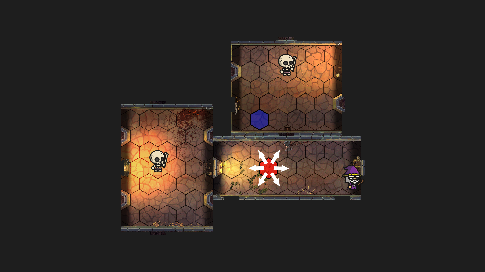
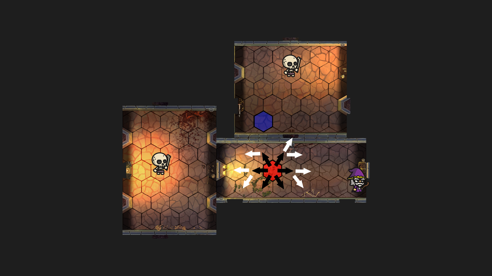
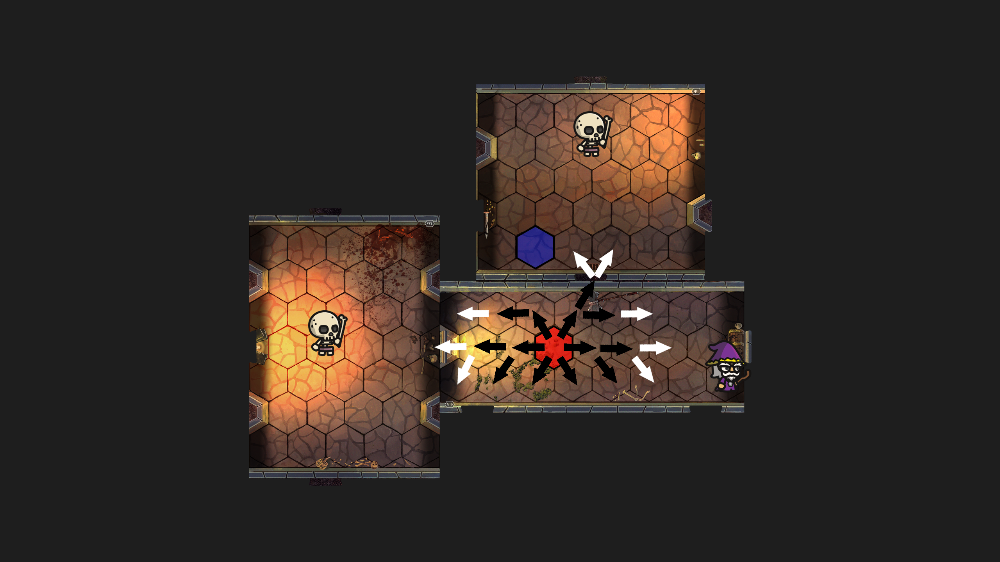
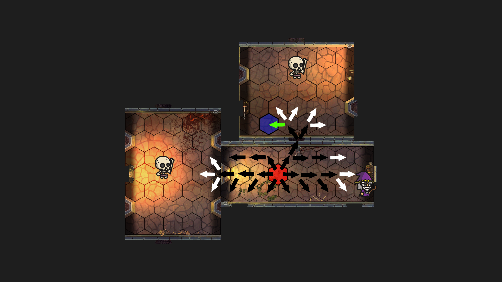

Movement
In the video, you may notice that player will avoid walls and enemies automatically when pathing. This was on purpose and was quite difficult. The way the algorithm works in principle is
similar to the way water would act if it was poured over a maze. Starting from the player different pathes are erected and tracked. Look to the image slides. Pretend the red hexagon is where the movement starts and the blue hexagon is
where it is going to finish. Although normally, the wizard would be the starts and the mouse clicked red hex would be the end. I just felt this made the algorithm easier to visualize. As the arrows radiate outwards, they do not overlap.
The algorithm will track each arrow and store all arrows in a path. On each iteration, none of the hexagons are revisited. Once the final hex is reached, the algorithm stops and checks to make sure that the quickest pathes
is returned. Sometimes the algorithm will double up on a hexagon in a single iteration, but that is to solve for a possibility of not finding the quickest path but one from the quickest path. It still essenstially works the same.
1 / 4

The algorithm moves out 1 hex in each direction
2 / 4

It moves further out but does not repeat hexes
3 / 4

Continues to move out not pushing past walls
4 / 4

Finds the destination hex and picks the shortest path
❮
❯